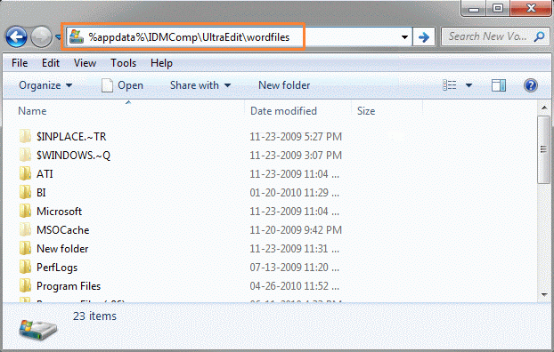

Text Editors
While it is possible to create scripts and config files with Windows' regular Notepad, dedicated editors have features like auto-completion, syntax highlighting and bracket matching that makes scripting and troubleshooting a lot easier.
The latest wordfiles, and instructions on how to set up syntax highlighting for the most popular editors at BIA are listed below:
Wordfiles
The required syntax definitions for Notepad++, TextPad & UltraEdit can be found in this file: WordFiles.zip
Notepad++
V6.2 and higher
Download the latest version of the Wordfiles, and extract the two files in the Notepad++ folder to your desktop.
Start Notepad++, and select Settings | Style Configurator, to determine which file to import.
If "Select theme" is "Default (stylers.xml)" (background is white), then you should import the file VBS_Light.xml:
If the current theme is " " (or something similar, with a dark background) you should import VBS_Dark.xml:
" (or something similar, with a dark background) you should import VBS_Dark.xml:
If using any different theme, use the closest one, and adjust the colors later (see step 7).Select Language | Define your language..., and Import the appropriate XML file, based on your current theme.
Close and re-open Notepad++.
Open a VBS file, or, if it is already open, select the appropriate language under "Languages".
Styles can now be fine-tuned under Language | Define your language...:
After you select either "VBS Scripts" or "VBS Configs" in the "User language" drop-down menu, you can then modify the styles for each of the defined groups via the "Styler" buttons.
If a VBS wordfile is already installed, then remove it first (Language | Define your language..., Select "User language: VBS Scripts", click "Remove", and do the same for "VBS Configs"), and then do the install as described above.
UltraEdit
V15 and higher
Download the latest version of the Wordfiles, and in it open the folder UltraEdit / Version 15 and higher.
Make sure UltraEdit is closed.
Open Windows Explorer, and enter %appdata%\IDMComp\UltraEdit\wordfiles in the address bar.
The entered address (%appdata%\IDMComp\UltraEdit\wordfiles) will be converted into something similar to C:\Users\ltd\AppData\Roaming\IDMComp\UltraEdit\wordfiles.
Copy the file VBS2_Script.uew and VBS_Configs.uew into this folder.To edit the display attributes, open "Advanced | Configuration", and select "Syntax Highlighting" from the Navigation group "Editor Display".
Select "ArmA/OFP/VBS2 Scripts" from the "Language Selection" drop-down list on the right, choose the desired "Color Group", and then adjust the foreground and background colors to your liking.More instructions are available here:
http://www.ultraedit.com/support/tutorials_power_tips/ultraedit/add_a_wordfile.html
V14 and earlier
Download the latest version of the Wordfiles, and in it open the folder UltraEdit / Version 14 and lower.
Open your existing wordfile in UltraEdit, by going to "Advanced | Configuration", and selecting "Syntax Highlighting" from the Navigation group "Editor Display".
Click on the "Open" button next to the path to the current wordlist file.
Append VBS_Scripts.txt to the end of the current wordfile.
The first line of the language definition section starts with /L20 (this indicates the index of the language, with a maximum of 20).
Make sure there is no other section that has the same index. If there is one already, find a free index, and use that one instead for the VBS2 section.More instructions are available here:
http://www.ultraedit.com/support/tutorials_power_tips/ultraedit/add_a_wordfile_pre_v15.html
Auto-complete
To enable auto-completion, go to "Advanced|Configuration" - "Editor|Auto-complete", and check the "Show auto-complete dialog automatically" option.
Be aware though, that auto-completion will always use lowercase for all commands.
Textpad
V5 and higher
Download the latest version of the Wordfiles, and extract it.
Make sure Textpad is closed.
Copy the two *.syn files into the "Samples" subfolder of your TextPad installation folder (e.g. Program Files\TextPad 5\Samples).
Open Textpad, and select "Configure | New Document Class...".
As "Document class name", enter "SQF", click "Next".
As "Class members", enter "*.sqf", click "Next".
Check "Enable syntax highlighting", and select "sqf.syn" from the "Syntax definition file" drop-down lists.
Click "Next" and "Finish".To edit the associated extensions and the display properties, select "Configure | Preferences...", and open the "SQF" branch in the "Document Classes" tree.
More instructions are available here:
http://www.textpad.com/add-ons/syna2g.html